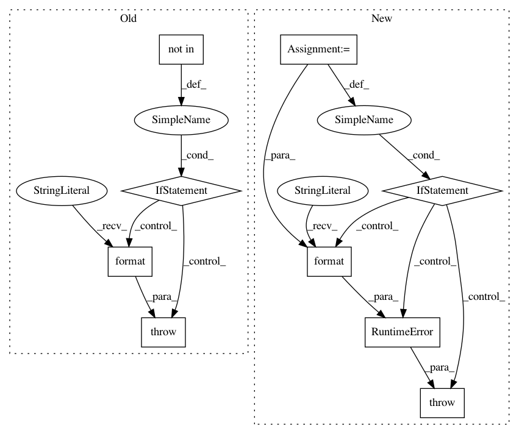

233020f67b2ae917763ecbedab1324390fe47cd1,misc/sos_magic.py,SoS_Magics,sosdict,#SoS_Magics#Any#,155
Before Change
// do not return __builtins__ beacuse it is too long...
actions = line.strip().split()
for action in actions:
if action not in ["reset", "all", "keys"]:
raise RuntimeError("Unrecognized sosdict option {}".format(action))
if "reset" in actions:
return self._reset()
if "keys" in actions:
if "all" in actions:
After Change
"Magic that displays content of the dictionary"
// do not return __builtins__ beacuse it is too long...
actions = line.strip().split()
keys = [x for x in actions if x not in ["reset", "all", "keys"]]
for x in keys:
if not x in env.sos_dict:
raise RuntimeError("Unrecognized sosdict option or variable name {}".format(x))
if "reset" in actions:
return self._reset()
if "keys" in actions:
if "all" in actions:
In pattern: SUPERPATTERN
Frequency: 3
Non-data size: 9
Instances
Project Name: vatlab/SoS
Commit Name: 233020f67b2ae917763ecbedab1324390fe47cd1
Time: 2016-10-25
Author: ben.bog@gmail.com
File Name: misc/sos_magic.py
Class Name: SoS_Magics
Method Name: sosdict
Project Name: KaiyangZhou/deep-person-reid
Commit Name: 3cbeab42c246425425c584cd53f1cc25d8c738a7
Time: 2019-03-15
Author: k.zhou@qmul.ac.uk
File Name: torchreid/datasets/__init__.py
Class Name:
Method Name: init_vidreid_dataset
Project Name: KaiyangZhou/deep-person-reid
Commit Name: 3cbeab42c246425425c584cd53f1cc25d8c738a7
Time: 2019-03-15
Author: k.zhou@qmul.ac.uk
File Name: torchreid/datasets/__init__.py
Class Name:
Method Name: init_imgreid_dataset